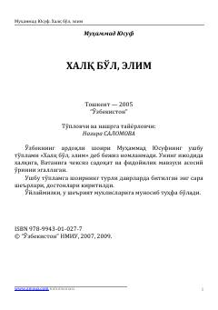

XBO'zbekiston xalq shoiri Muhammad Yusufning Vatan va el-yurt muhabbatiga bag'ishlangan sara she'rlar to'plami.
Mazkur to'plam O'zbekiston xalq shoiri Muhammad Yusufning turli yillarda bitilgan eng sara she'rlari va dostonlarini o'z ichiga oladi. Kitobda Vatanga muhabbat, el-yurt sha'ni va fidoyilik kabi yuksak insoniy tuyg'ular tarannum etilgan.